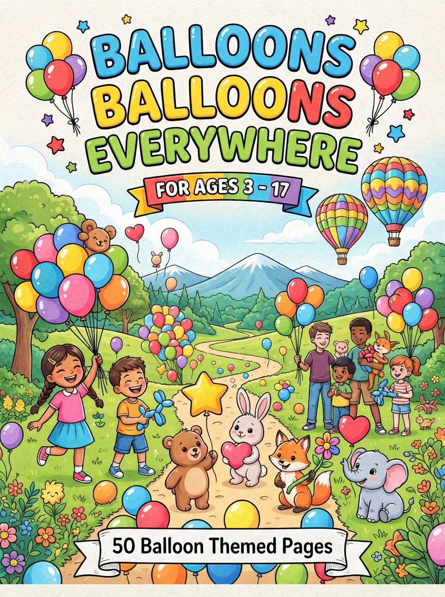

Balloons, Balloons, Everywhere!
A festive coloring book filled with 50 balloon-themed scenes, from birthday parties and parades to carnivals and county fairs. Perfect for kids who love color, celebration, and a little bit of whimsy on every page.
Buy on Amazon